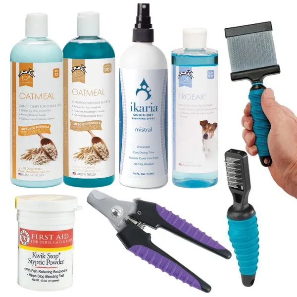

Essential Grooming Tips for Dogs & Cats
Published on August 8, 2025 by Pawvaro Team

Best grooming for Dogs and Cats
Grooming is more than just keeping your pet looking good — it’s essential for their health and comfort.
1. Brushing
Regular brushing removes loose hair, prevents mats, and distributes natural oils.
2. Bathing
Use pet-safe shampoos and avoid over-bathing to prevent dry skin.
3. Nail Trimming
Keep nails short to prevent discomfort and joint issues.
4. Ear Cleaning
Regular ear checks help prevent infections — use vet-approved cleaners.